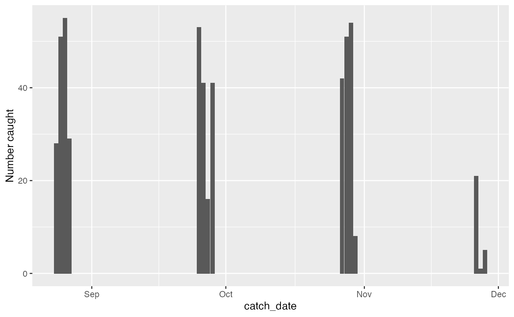
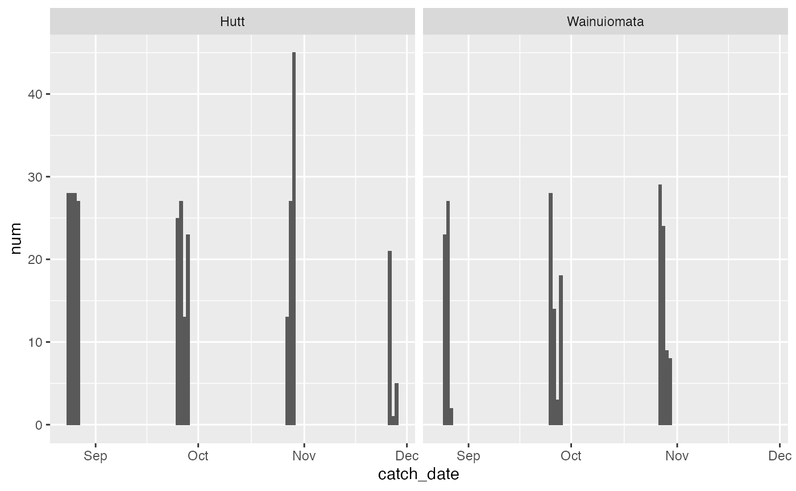
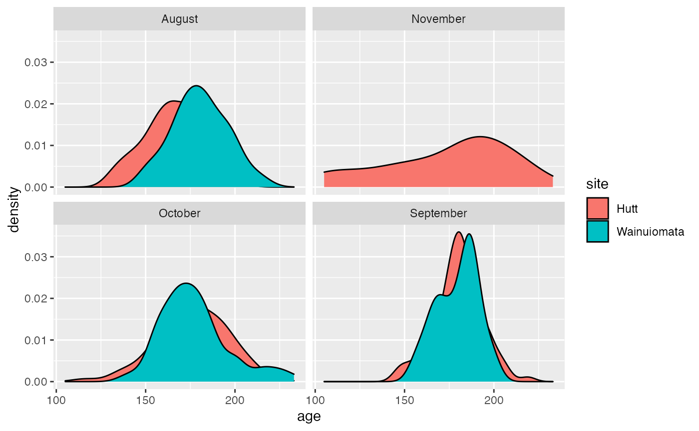
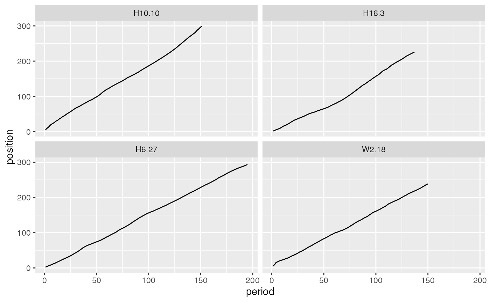
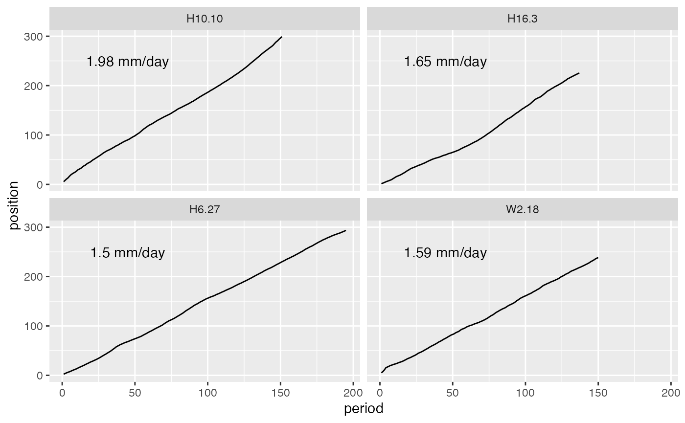

fishdata-examples.RmdThis vignette will show a few examples of how to use the datasets in fishdata. As always, start by loading the fishdata package, plus some extra packages for data manipulation and visualisation.
Lets start by asking a simple question: “How many juvenile whitebait did I catch each time I went fishing?”. To answer this, we’ll need the juveniles dataset.
data("juveniles")
catches <- juveniles %>%
group_by(catch_date) %>%
summarise(num = n())
ggplot(catches, aes(x = catch_date, y = num)) +
geom_col() +
labs(y = "Number caught") We can see a relatively constant pattern of catches, but definately tailing off at the end of November. That was the end of the fishing season in New Zealand, so possibly seeing lower recruitment then.
We actually have two sites, so lets add site data into our graph above and see how that changes things.
catches_site <- juveniles %>%
group_by(site, catch_date) %>%
summarise(num = n())
ggplot(catches_site, aes(x = catch_date, y = num)) +
geom_col() +
facet_wrap(~site) Couple of interesting differences to note here: 1) Hutt appears to be more consistent, and has fewer low catch days, and 2) the dropoff at end of November was even more present in Wainuiomata where there were zero fish caught.
Lets now look at age frequencies across sites and months. To do this, we need to add our metrics data to our base data. We do this with a left join.
data("juvenile_metrics")
juv <- juveniles %>%
left_join(juvenile_metrics, 'fish_code')
ggplot(juv, aes(x = age, fill = site)) +
geom_density() +
facet_wrap(~month)
Looks pretty similar overall. Shame about the missing data in November.
Lets do something really cool - reconstructing daily growth patterns using the otolith growth data. Since there are hundreds of fish, we’ll just take a random sample of 4 fish and plot them. We’ll need the juveniles dataset for catch times and locations, and juvenile_growth for the daily data.
data("juvenile_growth")
# Take random sample of fish
set.seed(123)
random_juvs <- juvenile_growth %>%
filter(fish_code %in% sample(unique(juvenile_growth$fish_code), 4, replace = F))
ggplot(random_juvs, aes(x = period, y = position)) +
geom_line() +
facet_wrap(~fish_code) These aren’t the most interesting fish, as they appear to have pretty linear growth across their life. However, it’s still cool we can access data like this.
Lets now join onto the ‘metrics’ dataset and use that to access these fishes average growth rate, and add that onto the plot.
data("juvenile_metrics")
juv_mets <- select(juvenile_metrics, fish_code, growth_rate)
# Use left_join to add the growth rate data, summarise to get the average, then add some good text positions for the plot.
random_juvs_with_g_rate <- random_juvs %>%
left_join(juv_mets, 'fish_code') %>%
group_by(fish_code) %>%
summarise(g_rate = mean(growth_rate)) %>%
mutate(y = 250,
x = 45)
ggplot() +
geom_line(data = random_juvs, aes(x = period, y = position)) +
geom_text(data = random_juvs_with_g_rate, aes(x = x,
y = y,
label = paste0(round(g_rate, 2), " mm/day"))) +
facet_wrap(~fish_code)